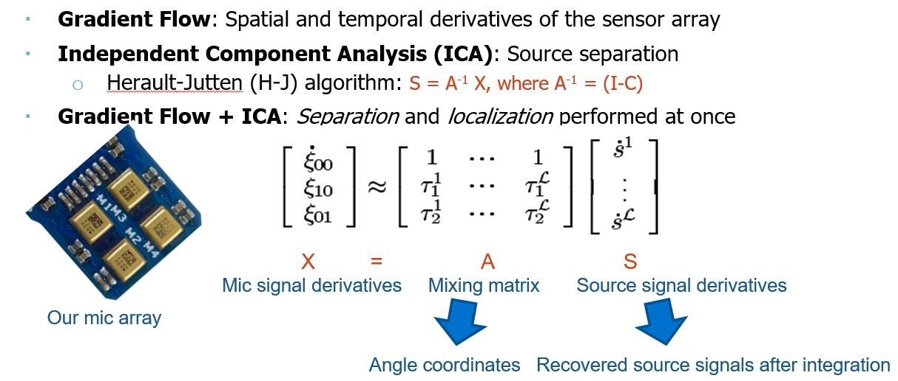

Part-of-speech Tagging :
Associated Course: Natural Language Processing
Key Words: Tagging, HMM, Viterbi algorithm, forward algorithm, dynamic programming, word embeddings, matrix operation, language model, maximum likelihood estimation, PyTorch
Description: A bigram Viterbi tagger that can be run on English text data was implemented. E.g. Given a sentence: "In 1988 , the company earned $ 1.38 a share . ", a tagged sentence can be predicted: "In/I 1988/N ,/, the/D company/N earned/V $/$ _OOV_/C a/D share/N ./.", where OOV means out of vocabulary. Tags I, N, D, V, and C are individually preposition, noun, determiner, verb, and cadinal number.
Given a tag sequence t and a sentence with word sequence w, a tagged sentence is in the form of w1/t1, w2/t2... The probability of generating the words w—marginalizing out the tag sequence that produced those words—can be computed by the forward algorithm according to the hidden Markov model (HMM):
(1) The forward algorithm, tag sequence not given (used for unsupervised learning)
If the tag sequence is given, the probability of generating the tagged words is then:
(2) The forward algorithm, tag sequence given (used for supervised learning)
Here, pA represents the transition probability matrix, and pB represents the emission probability matrix. Softmax parameterization was applied on matrices A and B to derive pA and pB. B is set as the product of a tag weight matrix Theta and a pretrained word embeddings matrix E. By setting A and Theta as parameters, stochastic gradient descent (SGD) can be used to train the paramters to maximize their likelihood (log probabilities derived by the forward algorithm). Finally, after training the parameters, prediction of a tagged sentence can be derived by the Viterbi algorithm, which finds the most probable tagging of w.
The forward algorithm and its variant the Viterbi algorithm are implemented using matrix operations and dynamic programming, making computation efficient. Semi-supervised training was done to increase tagging accuracy of unseen words. The parameters are first trained by labelled data, and then trained by labelled+raw data.
Isolated-word Speech Recognizers :
Associated Course: Information Extraction from Speech and Text
Key Words: Speech recognition, HMM, phoneme, forward-backward algorithm, MFCC, Bi-LSTM, CTC loss, Python, PyTorch
Description: Two isolated-word speech recognizers for a vocabulary of 48 words are built and compared. One uses phoneme-based HMMs, and the other uses MFCC-based Bidirectional LSTMs.
The first is the classic HMM-based recognizer. Phonemes of speech samples are given as the observed acoustic features. A 3-state HMM is created for each English letter, and a 5-state HMM is created for silence. A word HMM is formed by concatenating the letter HMMs and appending the silence HMM to the beginning and the end of the composite. 48 word HMMs are formed. The transition and emission matrices in the word HMMs are trained by the forward-backward algorithm. When performing speech recognition, based on given acoustic features, the word whose HMM computes the highest likelihood is predicted.
The second is a recurrent neural network based recognizer. The MFCC coefficients of each speech sample are the input acoustic features. The spelling of each word is the output label-sequence for its speech. A "silence" symbol is padded on each side of the output sequence. A 2-layer Bi-LSTM model is trained by CTC loss. To recognize the word of an input speech sample, first its MFCC coefficients will be computed, then spelings are estimated from the trained model. After that, CTC losses between the model output spelling and the silence-padded spellings of the 48 known words are checked. The word with the lowest loss will be the predicted word.
A 5% increase in validation accuracy is observed using the second recognizer.
Online Blind Source Separation :
Associated Course: Machine Intelligence on Embedded Systems
Key Words: Adaptive beamforming, Embedded system, C, Source separation, Sound localization, ICA, Online learning
Description: Gradient Flow Adaptive Beamforming (with the iterative Herault-Jutten algorithm) is implemented in C to achieve online blind source separation and localization on a STEVAL-STWINMAV1 microphone array (4 mics).
Gradient Flow Adaptive Beamforming with ICA [1] is an approach that can achieve source separation and localization in a miniature microphone array at the same time. The approach consists of two key components: (1) Gradient flow computation for localization and (2) ICA for separation. Gradient flow converts the problem of separating unknown delayed mixtures of sources from un-mixing mic signals directly, to separating the derivatives of the mic signals. By relating spatial and temporal derivatives of the field observed over a miniature sensor array, localization can be achieved. When applied along with ICA, the gradient flow changes the original X = AS mixing formulation into the following, where L = 3 for three sources, and each term in X represents the temporal and spatial derivatives of the mixtures:
Each term in the mixing matrix A represents an angle coordinate that can be used to estimate the source angles. The mixing matrix A is updated by the online Herault-Jutten (H-J) algorithm instead of the standard ICA to enable real-time processing [2]:
Pneumonia Classification from X-ray Images :
Associated Course: Machine Learning for Medical Applications
Key Words: Image classification, CNN, data augmentation, X-ray images, Grad-CAM, transfer learning, image segmentation, Python, Keras
Description: A Convolutional Neural Network (CNN) was trained on the Chest-X-Ray dataset with data augmentation to classify pneumonia.
The CNN is implemented in Keras:
Data augmentation: Brightness_range and zoom_range are used for augmentation since X-Ray images may vary in brightness and zoom scale due to equipment/environment conditions, and also change based on patients' postures and body sizes.
A macro F-1 score of 0.90 is achived with data augmentation, compared to the old score 0.66.
Gradient-weighted Class Activation Mapping (Grad-CAM) uses the gradients of any target concept flowing into the final convolutional layer to produce a coarse localization map highlighting the important regions in the image for predicting the concept. It is applied to visualize what the trained model is looking at. In the image below, the heatmaps are clearly showing the important regions of the x-ray images to look out for in order to determine if a patient has pneumonia or not -- that is, if the heart border and the pleural margin are clear and sharp:
Lung segmentation [3] and a pretrained Desnsenet finetuned by the segmented images are tested to see if performance can be improved. A macro F-1 score of 0.89 is achieved.
Speech Communication Channel with LPC Compression :
Associated Course: Audio Signal Processing
Key Words: speech analysis, speech synthesis, LPC compression, MATLAB, voice detection, pitch detection
Description:
Designed a speech communication channel using the LPC compression and synthesis scheme in MATLAB
Implemented a voice detector and a pitch detector to assist in the LPC compression scheme
Evaluated the compression scheme with PESQ and the mean amount of information required for transmission
Details can be seen here.
Music Source Separation with Noise :
Associated Course: Deep Learning
Key Words: U-Net, data augmentation, spleeter
Description:
Studied noise’s effect on the performance of music source separation done by U-Net and Bidirectional LSTM
Explored multiple variations of music data augmentation to improve the performance
Details can be seen in the report.